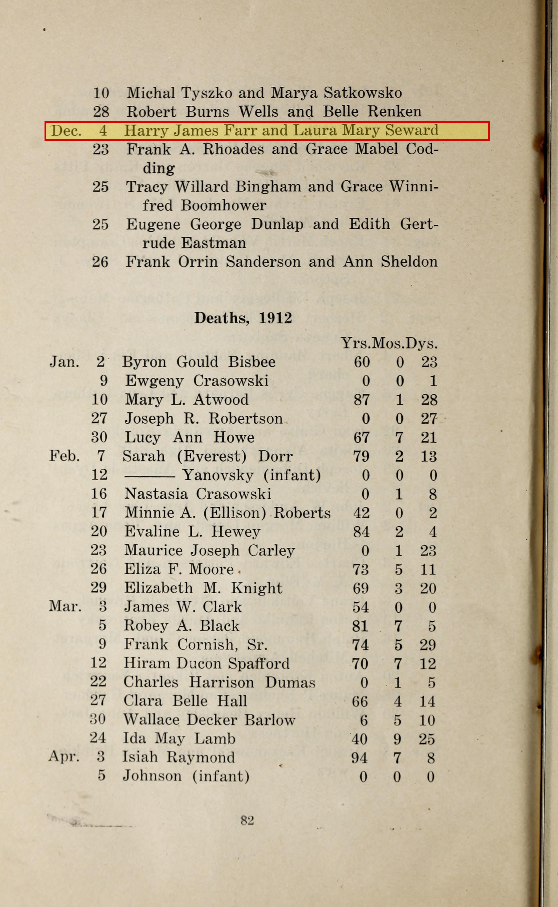
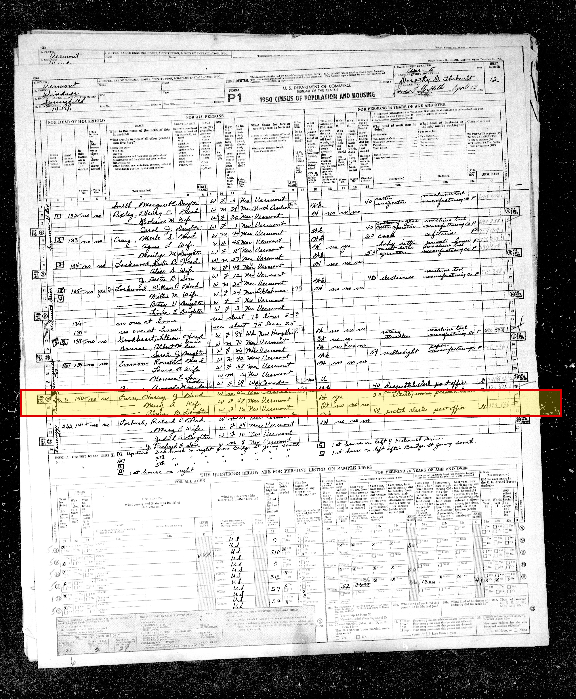

Farr, West and Seward
The Farrs
Gwendolyn (Farr) Magwire's parents were Harry James Farr and Mary Abbie (West) Farr. Two obituaries say so. A civil record of her birth has not been seen, so the parent link is probable and the tree draws it dashed.
Harry and Laura Mary Seward
Harry James Farr was born in Colorado about 1888. The state is all the records give, so Colorado is an area on the map, not a town pin. On December 4, 1912, a Harry James Farr married Laura Mary Seward in Springfield, Vermont. The town register is the record of that wedding.
The 1912 groom and the Harry J. Farr of the 1950 census share a name and a town, and the age fits a man of about 24 in 1912. They are treated as the same man, which is probable until the 1912 marriage record's age and birthplace are read. Laura was his first wife. What became of her, death or divorce, is not known. That is an open lead.

Mary Abbie West
Mary Abbie West, called Abby in the family, was born in Vermont about 1902. In 1950 she was Mary A. Farr, wife of Harry J. Farr, a postal clerk in Springfield. Their daughter Alma is named on that census page. Alma is living, so her age is not repeated here, and she has no place of her own on the map. The census image is a public record and is not redacted.
Richard H. Farr's 2009 obituary names his parents as Harry James Farr and Mary Abbie West Farr, and names his sisters Alma and Gwendolyn. Gwendolyn's obituary names the same parents. That is two obituaries, not yet a birth certificate, which is why the link stays probable.
Family tradition: West cousins remembered summer visits with Aunt Abby and Uncle Harry, and a West family farm in Wells, Maine. An "Abbie West" teaching in Chester, Vermont, in a report dated 1927, may or may not be her. Neither Wells nor Chester is on the map. Both are leads.

Gwendolyn, Richard and Alma
Gwendolyn Farr was born in Springfield in 1927. On January 7, 1961 she married Howard Frank Magwire there. They made their home in West Springfield, Massachusetts. Their daughter is Tracy Jo Crosby. Gwendolyn died in Suffield, Connecticut, on September 6, 2009, after 48 years of marriage. Her obituary remembered her quilting, knitting and sewing. The obituary text and the guest book are not copied here. The guest book names living cousins. Read the obituary.
Richard H. Farr was born in Springfield on July 1, 1930. He served in the U.S. Navy from 1948 to 1952, married Doris Ann Elliott, lived on Cape Ann, and died at Rockport, Massachusetts, on May 11, 2009. Doris's details are not published. His obituary is the one that names Mary Abbie West Farr. The scan of that page is kept back. Read the obituary.
Alma (Farr) Cook is their sister, and a daughter of Harry and Mary Abbie. She is living. The tree gives her name and that relationship only.
Gwendolyn on the tree · Richard on the tree · Alma on the tree